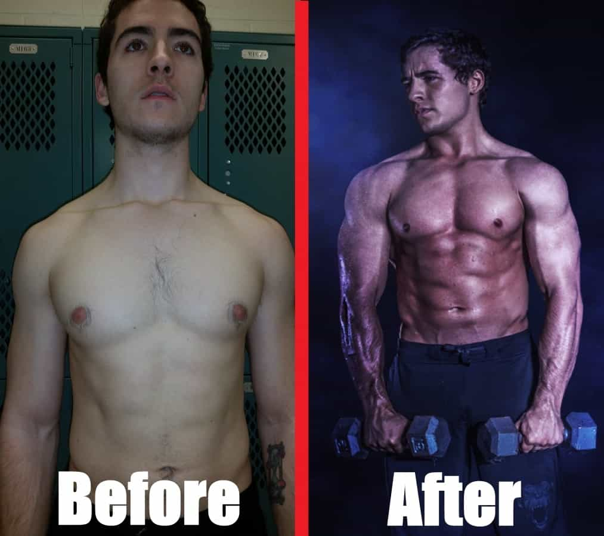
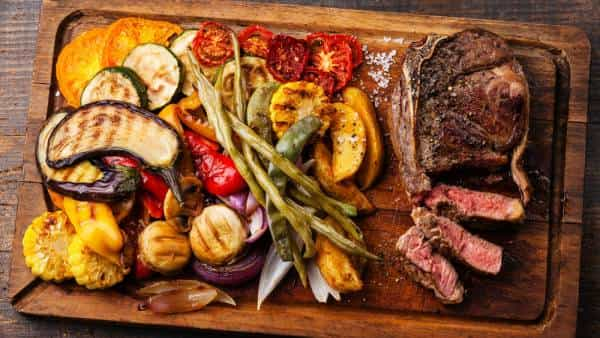
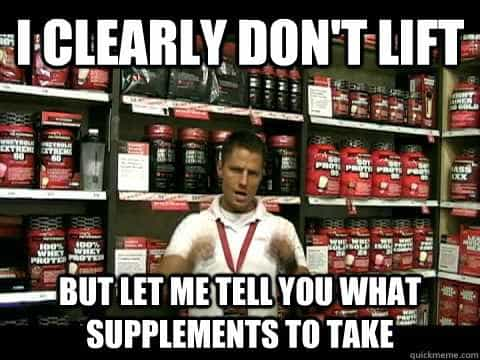

Sponsored Article is ROK's official account that publishes sponsored articles from advertisers. If you are interested hiring a sponsored article for your site, product, or service, visit our advertising page.


The following sponsored article is from Jon Anthony’s Body of an Alpha.
When I was around the age of 14, I weighed a whopping 115 pounds—with my shoes on. For a while I was okay with it. I was okay with playing video games and eating hot pockets all day, coasting through school… but eventually, when puberty kicked in, and those hormones started rushing through my bloodstream, something started to change.
I don’t know if it was the countless women that seemed to flock towards men with muscles, or if it was the allure of having more social status, but something deep inside of me pushed me to start working out. I bought a gym membership at my local Gold’s, bought all the supplements the buff salesman recommended to me, and started hitting the gym immediately. It was only a matter of time until I got jacked, right?
Wrong. After 6 months, hundreds of dollars wasted, and countless hours spent in the gym, I was exactly the same weight. “What the hell?” I thought. I did everything the conventional health experts recommended! I ate the healthy foods, I took the supplements, I worked out exactly like they said to. Why couldn’t I put on any weight?
It wasn’t until YEARS later that I discovered where I went wrong. See, most gym advice out there is geared towards two types of people: fatties trying to lose weight, and average people trying to bulk up. Well, I hate to break it to you, but if you’re a hard gainer, that advice isn’t going to work for you. If you’re a skinny guy who’s struggling to put on weight, you need to ignore 90% of what the “health experts,” are telling you.

I remember when I bought my first bodybuilding program. Every single word of advice in that $97 eBook was marketing gold. The sales page was designed to convert cold traffic at a 20% ratio, the customer support was professional, and the cover was absolutely KILLER. Everything looked great, but there was one problem.
It was complete and utter bullshit. The guy who wrote that eBook wasn’t even jacked. He was a brilliant marketer, yes, but he wasn’t jacked.
He never showed his face, and just paid male fitness models to pose for his eBook cover. I didn’t realize it at the time, but in retrospect it should have been obvious. This is what 90% of the fitness industry is comprised of: marketing geniuses who slap together a few Bodybuilding.com articles into a passable guide, and then outsource everything from designing the cover, to coding the sales page, to creating the video.
And while the advice in these mass-produced, generic eBooks may work for the average Joe, they won’t work for hard gainers, because they’re not written for hard gainers. I’ll never forget what my previous mentor said to me, years ago. He told me that you should find someone who’s where you want to be, and fucking listen to them.
It seems so obvious, but very few people do it. If you want to build muscle as a skinny guy, you have to listen to someone who’s been there and come out on the other side. You have to take advice from someone who’s gone from weighing a measly 115 pounds to a jacked 185 at 6% bodyfat. You have to find someone who’s gone the journey that you’re trying to travel, and who can show you the way. That’s what I plan to do.
Using the following tips, in addition to the gold mine of information I reveal in Body of an Alpha, I was able to put on an ungodly amount of muscle in record time.

Go to your doctor some time and ask him what foods you should eat to be healthy. I’d bet money that he’ll recommend you eat a diet comprised mainly of vegetables, fruits, and lean meats. And while these are great to eat, there’s something that he’s leaving out; something critical.
If you want to bulk up as a hard gainer, you need to eat buckets of carbohydrates. You need to eat at LEAST 300 grams of carbohydrates every single day—when I was preparing for the before and after picture above, I ate 450 grams of carbohydrates per day, in conjunction with the routine I discuss in my eBook.
Carbohydrates are demonized by the mainstream health industry, because most people aren’t hard gainers. If you’re trying to lose weight, cutting out the carbs and following a paleo diet is great, but if you’re a skinny guy trying to build muscle, you NEED those carbs.
Carbohydrates spike a hormone known as insulin, which is a “storage hormone.” In other words, when you eat starches like sweet potatoes, brown rice, and oatmeal, it releases a cascade of chemicals in your body, signalling for it to put on weight. This is obviously bad if you’re fat, but if you’re scrawny? It’s a dream come true.
I recommend you do what’s known as carb-loading. I discuss this in depth in Body of an Alpha, but the idea is that you strategically time your carbohydrate rich meals in order to maximize muscle gain and minimize fat gain. As a hard gainer, you should aim to have 100-150 carbohydrates before your workout, and 100-200 right after.
Aim to consume slow digesting, complex carbohydrates, such as the following:
Some have speculated that you should avoid grains, but the data isn’t out on that one yet. You’ll have to see for yourself how you feel after consuming gluten. Personally, I recommend you bulk cook a week’s worth of quinoa and store it in a container for later. Quinoa is the only non-meat based food that is a complete protein, plus it’s got tons of fiber, vitamins, and complex, slow-digesting carbohydrates to help you build muscle ASAP.
I remember my first personalized workout routine. After paying $100’s in fees for a personal trainer, he told me that he’d designed a custom-tailored, perfect fit routine just for me. It must’ve worked great, right?
Wrong. Most personal trainers, “gurus,” and fitness “experts,” don’t know shit about how to build muscle when you’re a skinny guy. Asking that dude who’s been jacked since age 14 how to build muscle is like asking a trust fund baby how to make money. If you want to know how to get jacked as a hard gainer, you need to ask a hard gainer who’s done it himself.
Most people make one of two mistakes—they either do the typical starting strength type routine, or they follow some ridiculous split. While these have their merits, and you’ll certainly gain some muscle as a hard gainer from these routines, they aren’t optimal.
It took me YEARS to figure this out, but hard gainers respond best to a combination of strength and hypertrophy training. If they focus too much on hypertrophy, they plateau very easily and never gain muscle. If they focus too much on strength training, however, they don’t get any bigger after a certain point (just stronger).
P.H.A.T., which stands for Power Hypertrophy Adaptive Training, is the no-holds-barred, brutal and effective system for hard gainers trying to build muscle, PERIOD. It’s based around two forms of training: power and hypertrophy.
I give a specific workout routine to follow in my eBook, along with an exercise demonstration guide to follow, but this is the model which you want to build your workout around:
All in all, it comes out to roughly 5 days a week—the power days lasting around 2 hours, and the hypertrophy days being just over 60 minutes. While this may sound like a lot, it’s actually not considering how fast you’ll make progress. Aim to have as many compound lifts as possible, especially for your power days. The bulk of your hypertrophy workouts should be compound lifts, but don’t forget to throw in some auxiliary lifts, as well.
The single greatest discovery I made as a hard gainer was using protein shakes to add an extra 1,000-2,000 calories into my daily diet, because it’s a pain in the ass to eat 1,000 calories worth of brown rice, lean steak, grilled vegetables, and sweet potatoes.
It takes 15 minutes to cook the rice, another 10 for the steak, 10 for the veggies, and 10 to microwave the sweet potatoes, then another 20 minutes to eat, and 10 minutes to clean up. Having to make 3-4 meals like this every single day is WAY too much time.
With shakes, though? You can make a delicious 1,000 calorie protein shake jam-packed with protein, healthy fats, and complex carbs, in just a matter of 2 minutes. In fact, when I first started to understand the power of personalized protein shakes, my gains exploded through the roof.
When I was preparing for my “Before and After” photoshoot, which you saw above, I had AT LEAST two protein shakes from my “Alpha Shakes,” eBook every single day. Here’s two of my favorite recipes for hard gainers:
When you throw all of these ingredients in a blender and mix them together, an aroma not unlike a chocolate milkshake will tantalize your taste buds. This smooth, frothy, and creamy shake has a whopping 78 grams of protein, 49 grams of healthy fats, and 255 grams of carbohydrates. Even the most stubborn of hard gainers will put on weight if he has one of these suckers a day.
What can I say? I absolutely love chocolate shakes—and it shouldn’t be hard to see why. This one has a modest 765 calories, with a high protein to carb ratio. It’s great first thing in the morning or right before bed, to prime your body with muscle-building nutrients meant to take your gains to the next level.
If you want to get extra serious with the shakes, you can add supplements such as creatine to them, but I’ll save that for the next tip…

Upon buying a membership to your local gym, you will be bombarded with offers from sleazy salesmen promising you unrealistic gains from ridiculously overpriced supplements. Let me tell you now: you do not need 90% of the supplements that they will recommend to you.
Will they help? Yeah, sure—some of them might. But is an extra 5% increase in your muscle gain worth $149 a month? Of course not. As a hard gainer, focus on sticking with the basics: creatine, a mass gainer, and a pre-workout. Then, if you’d like, you can add some testosterone-boosting supplements on top of this (which I discuss in Body of an Alpha), but only after you have the basics covered.
Creatine is dirt cheap. You can get a year’s supply for like $30, but the impact that it has on your strength is absolutely incredible. By enhancing ATP, your body’s energy synthesis mechanism, it will give you explosive power, the likes of which you’ve never seen before—and best of all, it will make your muscles look fuller, rounder, and pumped up.
Most guys would recommend you buy whey protein isolate, or even concentrate, but if you’re a skinny guy I recommend you buy a mass gainer. These are protein shakes designed SPECIFICALLY with skinny guys in mind, who need some serious nutrients to pack on slabs of muscle. I recommend Rich Piana’s Mutant Mass for all hard gainers, due to its high caloric content, phenomenal ratio of macro-nutrients, and high quality ingredients.
Lastly, is the pre-workout. While many would claim that they’re all hype, I would disagree—good pre-workouts are loaded with nutrients meant to boost blood flow, jack testosterone, and give you incredible laser focus for the most intense workout session you could possibly imagine. My personal favorites are discussed in the Body of an Alpha package, but a great all around pre-workout is GAT’s Nitraflex.
If you’d like to take it to the next level, you can check out Primeval Labs and follow the supplement regimen that I discuss in “Alpha Supplements,” but as a warning, they are NOT for the light-hearted. If you’re under 18, just follow the advice that I laid out—eat a ton of carbs, blend strength and hypertrophy training, down those shakes, and get the key supplements. You’ll be absolutely shredded in no time at all.
If you want to put on POUNDS of solid muscle faster than you ever thought possible, then consider checking out my flagship eBook. For a limited time only, I’m giving Return of Kings readers 50% off, plus two FREE eBook bonuses that are not available ANYWHERE ELSE!
In addition to this, you’ll also get “Priority Coaching,” where if at any time, you have ANY questions about how to get jacked, you can send me an email to my PERSONAL email address, and I’ll get back to you with your answers in just 48 hours—that’s a promise.
In Body of an Alpha, I cover damn near EVERYTHING that you need to know about packing on slabs of muscle, from what workout routine to follow, to what supplements to use, to recovery tactics, dieting advice, and more. This “Bodybuilding Bible” has a whopping 26 chapters and over 150 pages PACKED with insider secrets and tips from YEARS of experience in the fitness industry!
Here’s some of the benefits that you’ll get when you decide to purchase my DEFINITIVE guide to bodybuilding in the next 48 hours:
The sale ends in 2 days, so when you ACT NOW, you’ll receive 150+ pages of all-killer no-filler advice, LOADED with knowledge from nearly a decade of experience and over $10,000 spent and WASTED on bullshit.
I want to be clear, though—this won’t be easy. This isn’t some late night infomercial promising you that you can look like Arnold Schwarzenegger in “5 minutes a day,” or some other nonsense like that. Getting the physique of a Greek god will take a LOT of hard work, discipline, and focus…but if you’re willing to put in the work, the reward is yours.
So if you want to take it to the next level, and get that aesthetic, ripped physique that’ll get you laid in record time, act right now and take advantage of my 50% off discount while it still lasts! Do NOT let this opportunity pass you by, my kratom-loving brethren! This sale will expire within the next 48 hours, and will NEVER be available again! Click here to learn more.